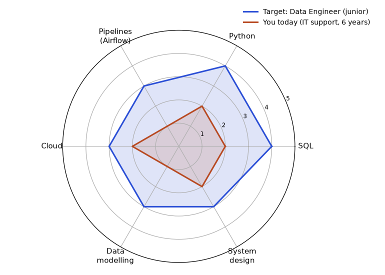

In this chapter
You want a better job, but the words "data analyst", "data engineer", "ML engineer" and "AI engineer" sound like one big blur. If you pick the wrong target, you will study the wrong things for a year. This chapter gives you a clear map. You will learn what each role does in a normal working day, which of your current skills already count, and how to plan your move in honest hours instead of wishes. By the end, you will be able to read any job description and say which role it really is, and you will have a first draft of your own transition story.
1.1 The Six Roles and What They Do Day to Day
The six roles in plain words
- Data Analyst answers business questions using data. Main tools: SQL, Excel, a BI tool (a dashboard tool such as Power BI or Tableau), and some Python. Output: dashboards, reports, recommendations.
- Data Engineer (DE) builds the pipelines (automatic data movers) that bring data from many sources into one reliable place, usually a warehouse (a database designed for analysis). Main tools: SQL, Python, Airflow, Spark, cloud storage, Kafka.
- Data Scientist (DS) uses statistics and machine learning (ML, programs that learn patterns from data) to predict or explain things. Also designs experiments such as A/B tests. Output: models, analyses, experiment results.
- ML Engineer (MLE) takes a model and makes it a reliable product: training pipelines, serving APIs, monitoring, retraining. This is software engineering plus ML.
- AI Engineer builds applications on top of large language models (LLMs): prompts, RAG (retrieval-augmented generation, where the model reads your documents before answering), agents, evaluation, guardrails.
- Analytics Engineer sits between DE and Analyst. Uses SQL and tools like dbt to build clean, tested, documented tables that analysts use.
Titles differ by company. A "Data Scientist" at one company may do pure dashboards; at another, pure deep learning. Always read the job description (JD), not the title.
A typical day, by role
| Role | Morning | Afternoon | Biggest pain |
|---|---|---|---|
| Analyst | Check dashboard numbers, answer a stakeholder ping | Write SQL for a new question, make 3 charts | Vague questions, dirty data |
| Data Engineer | Check overnight pipeline failures | Build or fix a pipeline, code review | Late or broken upstream data |
| Data Scientist | Explore data, plan features | Train and compare models, write findings | Unclear target, messy labels |
| ML Engineer | Check model monitoring, drift alerts | Improve serving code, deploy | Models that work in a notebook but fail in production |
| AI Engineer | Review failed chatbot answers | Improve retrieval, prompts, evaluation set | Hallucinations, cost, latency |
| Analytics Engineer | Review dbt test failures | Model new tables, write docs | Definitions that differ by team |
Skill weight by role
Rate 0 (none) to 3 (heavy). These are rough, from the skill maps in this course.
| Skill | Analyst | DE | DS | MLE | AI Eng | Analytics Eng |
|---|---|---|---|---|---|---|
| SQL | 3 | 3 | 2 | 1 | 1 | 3 |
| Python | 1 | 3 | 2 | 3 | 3 | 1 |
| Statistics | 2 | 0 | 3 | 2 | 1 | 1 |
| ML | 0 | 0 | 3 | 3 | 2 | 0 |
| System design | 0 | 3 | 1 | 3 | 3 | 1 |
| Business sense | 3 | 1 | 3 | 1 | 2 | 2 |
Problem 1.1.1 You enjoy SQL and pipelines, dislike heavy statistics, and like systems thinking. Using the table, which two roles fit best?
| Step 1 | Pick the skills you like: SQL, system design. Dislike: statistics. |
|---|---|
| Step 2 | Add scores for SQL + system design, and subtract nothing for statistics except to remove roles where it scores 3. DE: 3 + 3 = 6, statistics 0. MLE: 1 + 3 = 4, statistics 2. Analytics Eng: 3 + 1 = 4. DS: 2 + 1 = 3, statistics 3 (bad fit). |
| Answer | Data Engineer first (6 points, no statistics), Analytics Engineer or ML Engineer second. This is a rough guide, not a law. |
| Check | Add the DE row again: 3 (SQL) + 3 (system design) = 6, and the statistics score is 0. Correct. |
| Why it matters | A simple score table stops you from chasing a role only because it is popular. |
Problem 1.1.2 A JD says "Data Scientist" but lists: Airflow, dbt, Snowflake, SQL, dashboards. Which role is it really?
| Step 1 | Count the keywords. Airflow, dbt and Snowflake are pipeline and warehouse tools. SQL and dashboards are analytics tools. |
|---|---|
| Step 2 | No model training or statistics keywords appear. |
| Answer | It is an Analytics Engineer or Data Engineer job with a misleading title. Decide whether you want that job before you apply. |
| Check | Look at the skill table: the keywords match the SQL = 3 and DE/Analytics Eng columns, not the ML column. In plain words: you will build tables and pipelines, not models. |
Real-world mapping
| Role | Example output | Where it appears in the job |
|---|---|---|
| Analyst | Weekly sales dashboard with 6 charts | Monday business review meeting |
| Data Engineer | Pipeline that loads 10 million rows nightly by 6 am | A bank's morning risk report |
| Data Scientist | Churn model with 0.80 AUC | Telecom retention campaign |
| ML Engineer | Model API answering in under 100 ms | Payment fraud check at checkout |
| AI Engineer | Chatbot answering from 5,000 HR documents | Employee help desk |
| Analytics Engineer | A tested orders table everyone trusts | Finance and marketing use the same revenue number |
The picture
The diagram below shows one flow. Read it top to bottom. Data starts raw at the top. Each role takes what the role above produced and makes it more useful. The Analyst and the ML/AI side are both customers of the clean tables.

Raw data sources
|
[Data Engineer] --> Warehouse / Lake
| |
[Analytics Engineer] --> clean tables --> [Analyst] --> dashboards
|
[Data Scientist] --> model idea
|
[ML Engineer] --> production model
|
[AI Engineer] --> LLM apps using the same dataConnection to the real job
Small companies hire one "data person" who does all of this. Large companies split it into many roles. Your first job will probably touch two or three of these boxes. That is good: it shows you what you like.
Applications
- Banks: DE moves transaction data, DS builds credit models, Analyst tracks collections.
- E-commerce: Analytics Engineer defines "orders"; MLE serves search ranking.
- SaaS: AI Engineer builds a support chatbot over help articles.
Check yourself
- Which role builds pipelines that move data? Answer: Data Engineer.
- Which role mainly uses dbt to model clean tables? Answer: Analytics Engineer.
- Why read the JD and not the title? Answer: Titles are inconsistent between companies; the tool list shows the real work.
1.2 Your Transition Story: From IT to Data
The learner of this document is a working professional moving from a technical IT or testing role into data roles. That is the only background the document assumes; every example below is general.
What you already do, and its data twin
| Skill many working professionals already have | Data/ML equivalent |
|---|---|
| Reading median and 95th-percentile waiting times (a hospital's appointment waits) | Percentiles, distributions, outliers in EDA |
| Planning for a busy day (customers per hour, time per customer) | Simulation, data generation, capacity plans |
| Finding why a queue at the bank is slow | Root-cause of a metric drop, model error analysis |
| Weekly reports for managers | Dashboards, executive summaries |
| Comparing this month's results with last month's | A/B tests, regression detection |
| Throughput, queues, Little's law | Pipeline throughput, streaming lag, autoscaling |
| Monitoring, SLAs | Data freshness SLAs, model monitoring |
The story (use this in interviews)
Write your story in four parts: where I was, what I noticed, what I built, where I am going.
Example in simple English:
"For five years I worked in IT support for a retail company. I noticed that every week the help desk produced thousands of ticket rows, but we only looked at averages. I built a small pipeline that loads the tickets into a database and draws the 95th-percentile resolution time per week. It showed a slow trend two weeks before customers complained. I enjoyed the data part more than the ticket-closing part, so I studied SQL, Python and statistics for a year. Now I want to work on data platforms where reliability and speed matter."
Notice what this story does: it is true, it has one result, and it explains why you want to change.
Problem 1.2.1 Turn this weak bullet into a transition-story sentence: "I worked on reports for a company's help desk."
| Step 1 | Add object and tool: "I analysed help-desk tickets using SQL." |
|---|---|
| Step 2 | Add scale: "for a team handling up to 1,000 tickets a day." (Use your own true number.) |
| Step 3 | Add result and data angle: "I analysed 2 million ticket rows and found that one approval step was the bottleneck, which cut the 95th-percentile resolution time from 24 hours to 15 hours." |
| Answer | "I analysed help-desk tickets for a team handling up to 1,000 a day, studied 2 million rows, and found an approval bottleneck that cut the 95th-percentile resolution time from 24 hours to 15 hours." Check: (24 - 15) / 24 = 37.5% faster. Use only numbers that are true for you. |
| Why it matters | A sentence with scale, method and result is believable. "I worked on reports" is not. |
Problem 1.2.2 Which target role has the smallest gap for a working professional with strong SQL and scripting but no ML?
| Step 1 | List gaps. Analyst: BI tool and business sense. DE: pipelines, warehouse, orchestration. DS: statistics and ML (big gap). MLE: ML plus software engineering. |
|---|---|
| Step 2 | Your strengths (systems, scripting, reporting) match DE, Data Platform, and Observability-analytics best. |
| Answer | Data Engineer or Data Platform roles have the smallest gap. ML roles come after. |
| Check | Count gap items: DE has 3 gaps, DS has 2 big ones (statistics, ML) that each take months. A short gap list of familiar skills is a quicker climb. |
Niches that use your advantage
Operations Analytics, Data Platform, ML Platform, Observability/AIOps (using data to find and predict system problems). Few data people can answer "will this system survive 10 times the usual number of customers?" If you can reason about capacity and queues, you have an edge.
Connection to the real job
Interviewers love a clear story with one memorable project. See Chapter 11 for the project template and Chapter 7 for behavioral stories.
Applications
- Data Platform teams at product companies and GCCs (Global Capability Centers, offices that large foreign companies run in India).
- Observability tools companies.
- Any bank or telecom with large pipelines.
Check yourself
- Name two data-world twins of everyday work skills. Answer: waiting-time percentiles and EDA; build comparison and A/B tests (others are fine).
- What four parts make the transition story? Answer: where I was, what I noticed, what I built, where I am going.
- Which niche suits you best? Answer: Data platform, observability or operations analytics.
1.3 A Realistic Path and Timeline
The course plan stages: Analyst skills (SQL, Python) first, then Data Engineering, then ML, then AI Engineering. Switching to a data role does not need all stages. Many people move after SQL + Python + one pipeline project + one dashboard project.
Rough effort
At 1 hour a day, you get about 365 hours a year. Check: 1 x 365 = 365. Most people need roughly 6 to 12 months of steady work to be interview-ready for a first data role. This is a rough guide; it varies a lot with background and target.
Problem 1.3.1 You study 1 hour on 5 weekdays and 3 hours on one weekend day. How many hours in 26 weeks?
| Step 1 | Weekly hours = 5 x 1 + 3 = 8. |
|---|---|
| Step 2 | 26 x 8 = 208. |
| Answer | 208 hours in half a year. If you miss 20% of weeks, expect about 166 hours. Plan for misses. |
| Check | 208 x 0.8 = 166.4. In plain words: about 6 months of effort is only about 4 full-time work weeks (166 / 40 = 4.2). |
Problem 1.3.2 You want 3 projects done in 26 weeks, each needing about 50 hours of work, plus 60 hours of theory. Is the plan feasible with 208 hours?
| Step 1 | Projects: 3 x 50 = 150. Theory: 60. Total 210. |
|---|---|
| Step 2 | 210 is more than 208, and you will miss some days. |
| Answer | Not feasible as written. Reduce to 2 projects (100 + 60 = 160 hours) or extend to 32 weeks. Honest planning prevents guilt. |
| Check | 210 / 8 hours per week = 26.25 weeks, so you need at least 27 weeks with zero missed days. With misses, 32 weeks is a fair choice. |
The picture
Month 0-3 SQL + Python basics, 1 small analysis project
Month 3-6 Pipelines, warehouse, dashboard project, start applying to analytics/DE roles
Month 6-9 Cloud basics, ML basics, operations-analytics project
Month 9-12 Mocks, interviews, internal transfer talks, referrals
(Stay in your current role until you hold a signed offer.)Connection to the real job
Start applying before you feel ready. Interview calls are themselves the best teacher. Chapter 12 gives the job-search system.
Applications
- Planning a quarterly review of your own progress.
- Explaining to a manager how you will transition.
Check yourself
- How many hours is 1 hour/day for a year? Answer: 365.
- Why plan for missed days? Answer: Life happens; plans that assume perfection create guilt and quitting.
- When should you resign from your current job? Answer: After a signed offer in a data role.
1.4 Skills Gap Analysis: A Worked Method
Words you need
| Term | Meaning |
|---|---|
| Target role | One specific job family, for example "junior Data Engineer", not "something in data" |
| Level (0 to 5) | 0 = never used, 1 = seen it, 2 = can follow a tutorial, 3 = can do a small task alone, 4 = can do it at work and explain choices, 5 = can teach it and review others |
| Gap | Target level minus your level, for one skill |
| Priority | How often employers ask for the skill, multiplied by your gap |
The five-step method
- Collect 10 job descriptions (JDs) for the one role you picked in 1.1. Use real postings in your city or remote ones you could take.
- Count skills. Make a list of every tool or skill named. Count in how many of the 10 JDs each one appears.
- Set the target level for each of the top 6 skills. For a junior role, 3 or 4 is normal for the top two skills and 3 for the rest.
- Score yourself honestly using the level scale above. A level is real only if you can show a piece of work for it.
- Compute the gap and the priority, sort, and turn the top items into weeks (see 1.3 for hours).
Problem 1.4.1 You are an IT support engineer with 6 years of experience and you target junior Data Engineer jobs. From 10 JDs you count: SQL in 10, Python in 9, Airflow in 6, AWS in 6, data modelling in 4, system design in 3. Your levels (0 to 5) are SQL 2, Python 2, Airflow 1, data modelling 1, cloud 2, system design 2. Targets are SQL 4, Python 4, Airflow 3, modelling 3, cloud 3, system design 3. Which three skills do you study first?
| Formula | gap = target - level; priority = JD count x gap |
|---|---|
| Gaps | SQL 4 - 2 = 2; Python 4 - 2 = 2; Airflow 3 - 1 = 2; modelling 3 - 1 = 2; cloud 3 - 2 = 1; system design 3 - 2 = 1 |
| Priorities | SQL 10 x 2 = 20; Python 9 x 2 = 18; Airflow 6 x 2 = 12; modelling 4 x 2 = 8; cloud 6 x 1 = 6; system design 3 x 1 = 3 |
| Answer | SQL, Python, Airflow, in that order. Total gap is 2+2+2+2+1+1 = 10 points. |
| Meaning | Cloud has a high JD count, but you already have level 2 from your support work, so it ranks below modelling. Frequency alone would have put it above. |

How to read it: the gap is the blue area that the orange shape does not cover. Wide gaps (SQL, Python, Airflow, modelling) point away from the centre. Cloud and system design are narrow gaps because your support work already gave you something. Redo the chart every 6 weeks. The orange shape should grow outwards.
Problem 1.4.2 Turn the gaps into weeks. Assume 20 study hours per gap point (a planning assumption, adjust it after your first month) and 8 hours a week.
| Formula | weeks = gap points x hours per point / hours per week |
|---|---|
| All gaps | 10 x 20 = 200 hours; 200 / 8 = 25 weeks |
| Top three only | 6 points x 20 = 120 hours; 120 / 8 = 15 weeks |
| Answer | 15 weeks to be interview-ready on the top three skills, 25 weeks for the full list. |
| Check | Applying after week 15 is reasonable, because junior JDs rarely need all six skills at level 3 or more. Keep learning the rest while you interview. |
skills = {"SQL": (10, 2), "Python": (9, 2), "Airflow": (6, 2),
"Data modelling": (4, 2), "Cloud (AWS)": (6, 1), "System design": (3, 1)}
rows = sorted(((n * g, k, n, g) for k, (n, g) in skills.items()), reverse=True)
for p, k, n, g in rows:
print(f"{k:15s} jd={n:2d} gap={g} priority={p}")
gaps = sum(g for n, g in skills.values())
print("gap points", gaps, "hours", gaps * 20, "weeks at 8 h", gaps * 20 / 8)
top = rows[:3]
h = sum(r[3] for r in top) * 20
print("top3 hours", h, "weeks", h / 8)SQL jd=10 gap=2 priority=20
Python jd= 9 gap=2 priority=18
Airflow jd= 6 gap=2 priority=12
Data modelling jd= 4 gap=2 priority=8
Cloud (AWS) jd= 6 gap=1 priority=6
System design jd= 3 gap=1 priority=3
gap points 10 hours 200 weeks at 8 h 25.0
top3 hours 120 weeks 15.0Problem 1.4.3 Spot the dishonest score. A learner rates SQL level 4 because "I finished a 20-hour course". What is wrong and what is the fix?
| Idea | A level is real only if you can show work for it. |
|---|---|
| Test | Level 3 means a small task alone. Ask: can I write a join across three tables, with a window function, on a new dataset, without a tutorial open? |
| Answer | If not, the honest level is 2. Set the gap to 2, not 0, and plan 20 practice problems and one portfolio query set. |
| Why it matters | An inflated level hides the gap that the interview will find. A technical screen finds it in 10 minutes. |
Going deeper
Three refinements make the method closer to what a recruiter does.
- Split must-have from nice-to-have. JDs often list 12 tools. Treat the first 4 or 5 listed, and anything under "required", as must-have. Count these twice in your table.
- Add a proof column. Next to each skill, write the link or file that proves your level: a repo, a query set, a dashboard. An empty proof cell is a level you should lower.
- Re-run per market. The same role in a service company, a global capability centre (GCC) and a startup asks for different things (Chapter 12). Run the count on 10 JDs from the company type you want, not a mixed pile.
Connection to the real job
Managers do the same exercise when they hire: write what the team lacks, then look for people who cover it. You are doing it from the other side. A learner who arrives at an interview and says "my gap was Airflow, so I built this pipeline in 5 weeks" sounds like a colleague, not a student.
Check yourself
- Why multiply JD count by gap? Answer: a skill that is asked for often and that you lack deserves study first; a rare skill or one you already know does not.
- What proof do you need for level 3? Answer: a small task you did alone, with a file or link.
- Your gap total is 14 points at 20 hours each and 7 hours a week. How many weeks? Answer: 14 x 20 = 280 hours; 280 / 7 = 40 weeks, so cut scope to the top three skills first.
1.5 Moving In From a Non-Tech Background
Section 1.2 was written for people from IT. If you come from teaching, operations, finance, sales, healthcare or marketing, the same method applies, with two changes: the tools gap is larger, and your transferable skills are different. Start from the role with the shortest bridge, which is usually Data Analyst.
Transferable skills by background
| Background | What you already do | Data twin | Shortest bridge role |
|---|---|---|---|
| Finance or accounts | Reconcile ledgers, build Excel models, explain variances | Metric definitions, data validation, reporting | Data Analyst (finance or BFSI) |
| Operations or supply chain | Track delivery times, stock and delays in sheets | Process analytics, dashboards | Operations or supply-chain Analyst |
| Teaching | Explain hard ideas, grade, track student progress | Communication, assessment data, education analytics | Analyst in ed-tech, or a learning-analytics role |
| Sales or marketing | Funnels, campaign results, customer segments | Conversion analysis, A/B tests | Marketing or growth Analyst |
| Healthcare or pharma | Protocols, patient records, quality audits | Data quality, cohort analysis | Healthcare Analyst |
Problem 1.5.1 A school teacher with 8 years of experience wants a Data Analyst job in an ed-tech company. She has Excel at level 3, SQL 0, a BI tool 0, statistics 1. She can study 6 hours a week. Build a first plan.
| Step 1: target | Analyst, with SQL 3, BI tool 3, Excel 4, statistics 2 (a junior Analyst target). |
|---|---|
| Step 2: gaps | SQL 3 - 0 = 3; BI 3 - 0 = 3; Excel 4 - 3 = 1; statistics 2 - 1 = 1. Total 8 points. |
| Step 3: hours | 8 x 20 = 160 hours (she starts from zero in two tools, so use 25 per point for SQL and BI: 6 x 25 + 2 x 20 = 190 hours). |
| Step 4: weeks | 190 / 6 = 31.7, about 32 weeks. |
| Answer | About 8 months. Order: SQL (weeks 1 to 12), BI tool with a school-data dashboard (13 to 24), Excel and statistics (25 to 32). Start applying around week 24 with two projects. |
| Check | 6 hours a week for 32 weeks is 192 hours. That matches 190. |
Problem 1.5.2 Rewrite the same teacher's story in the three-sentence form from 1.2.
| Sentence 1: before | "For 8 years I taught maths and tracked marks for 180 students a term in spreadsheets." |
|---|---|
| Sentence 2: bridge | "Over 7 months I learned SQL and Power BI and built a dashboard of attendance against exam scores using open data." |
| Sentence 3: why you | "I know how to explain a number to people who are afraid of numbers, which is the hardest part of analytics." |
| Check | It names a number (180), a time (7 months), a proof (a dashboard) and a strength. No claim is invented. |
Going deeper: choosing the bridge job
Many career changers do not jump straight to the target role. They take a bridge job in their own field that uses data heavily: an "MIS executive" in operations, a "finance analyst" in accounts, a "program analyst" in a school group. A bridge job in the same company often needs only 3 to 4 months of preparation, pays close to your current salary and gives real work for the resume. After 12 to 18 months you move to a pure Analyst or Data role with a story that is hard to argue with. The cost is time. If your finances allow a direct jump, take it. If they do not, a bridge is not a defeat.
Check yourself
- Which role has the shortest bridge for most non-tech backgrounds? Answer: Data Analyst.
- What is a bridge job? Answer: a role in your current field that uses data heavily and gives resume proof.
- A learner starts from zero in SQL (gap 3 points at 25 hours) and has 5 hours a week. How many weeks for SQL? Answer: 75 / 5 = 15 weeks.
Chapter recap
- There are six main data roles; the tool list in the JD tells the real job.
- Analyst answers questions, DE builds pipelines, DS models, MLE productionises, AI Engineer builds LLM apps, Analytics Engineer builds clean tables.
- Technical work already gives you percentiles, root-cause thinking, reporting and capacity sense.
- Tell your transition story in four parts with one true number.
- Niches such as data platform and observability use your existing strengths.
- 1 hour a day is about 365 hours a year; plan for missed days.
- Apply before you feel fully ready; stay in your current role until a signed offer.
- Compare yourself with last month's you.
- Compare your skills to a target role with a gap table and radar chart, and treat non-tech experience as evidence (sections 1.4 and 1.5).
Pattern cheat-sheet
| Need | Pattern |
|---|---|
| Read a job description | Count tools, ignore the title |
| Percent improvement | (old - new) / old x 100 |
| Study hours per year | hours per week x weeks x (1 - missed share) |
| Transition story | Where I was, what I noticed, what I built, where I am going |
Practice set
- (Easy) Which role mainly uses dbt? Answer: Analytics Engineer.
- (Easy) A JD lists Spark, Kafka, Airflow. Which role? Answer: Data Engineer.
- (Easy) 1 hour/day for 90 days is how many hours? Answer: 90.
- (Medium) Convert "improved report turnaround" into a quantified bullet using the 95th-percentile turnaround from 30 minutes to 18 minutes. Answer: "Cut 95th-percentile report turnaround from 30 minutes to 18 minutes (40%) by batching the approvals." Check: 1.2 / 3.0 = 40%.
- (Medium) What is the output? You work 7 h/week for 30 weeks, miss 4 weeks. Hours? Answer: 7 x 26 = 182 hours.
- (Medium) Find the weakness: "I am just a support person, but I want to try data." Answer: It apologises and gives no evidence. Replace with what you built and measured.
- (Medium) Scenario: your manager asks why you want to move from your current role into data. Give a 3-sentence answer. Answer: "I enjoy analysing results more than the routine tasks. I built a small pipeline that spotted a slowdown early. I want to work where data and reliability meet."
- (Hard) Interview: "Why should we hire a former IT-support or testing professional as a data engineer?" Answer: Mention pipelines are systems: throughput, bottlenecks, SLAs, monitoring. Give one example where you found a bottleneck with data. Then name your SQL/Python/pipeline project.
- (Hard) Interview: "Walk me through your career in two minutes." Answer: Use the four-part story: past work with scale, noticed problem, what you built, target role. About 260 words at 130 words per minute is 2 minutes; aim for 200 to leave room.
- (Hard) Scenario: you have three offers of study time, 150 hours: a bootcamp, a project, or a course. Which first? Answer: The project; it creates proof. Add a course only for a gap the project exposes.
- (Medium) Target level for a skill is 4 and yours is 1. Gap? Two skills have gaps 3 and 1. Which first, if the gap-3 skill appears in 8 of 10 job ads and the gap-1 in 2 of 10? Answer: Gap is 3. Study the gap-3 skill first: bigger gap and higher demand.
- (Interview) How do you present 5 years of non-tech work to a data recruiter? Answer: Name the data tasks you already did (reports, targets, checks), give one number, then name the one skill you are adding.
Prompt pack
You are my patient, practical professor. I am a working professional in India moving to data roles; English is my second language, so use simple words. Teach me the differences between Data Analyst, Data Engineer, Data Scientist, ML Engineer, AI Engineer and Analytics Engineer. Explain step by step with a typical day for each, then ask me five questions one at a time to check I understand. Correct me kindly and finish with a table of skills by role.
You are my patient, practical professor. I am a working professional in India moving into data roles; English is my second language. Help me write my transition story in four parts: where I was, what I noticed, what I built, where I am going. Ask me questions first, one at a time. Then draft a 150-word version in simple English and a one-line version. Do not invent numbers; ask me for true ones. Here is my background: [PASTE HERE].
You are my patient, practical professor. I am a working professional moving into data roles in India. Topic: reading job descriptions to find the real role. I will paste 3 job descriptions. For each, tell me the real role, the tools that matter, my gap, and how many weeks of study the gap needs at 1 hour a day. Explain your reasoning in simple English. JDs: [PASTE HERE].
You are my patient, practical professor. I am a working professional in India learning data skills, 1 hour a day. Topic: planning a 6-month career transition. Give me 8 graded exercises on estimating study hours, setting stage goals and planning for missed days. Do not give solutions yet. After I answer each, give feedback and fix my arithmetic.
You are my patient, practical professor. I am a working professional moving into data. Run a mock interview for a Data Platform role: ask "Tell me about yourself" and "Why data?" and three follow-ups, one at a time. After each answer give feedback on clarity, evidence and numbers, then show a better version in simple English. My first answer: [PASTE HERE].